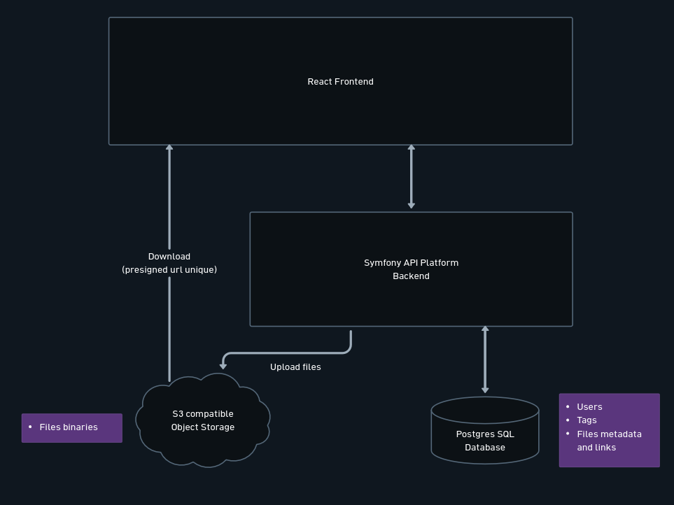

Partage de fichiers par lien, avec expiration, tags et mot de passe optionnel.
Quentin Macé, parcours Architecte Logiciel, OpenClassrooms. Septembre et octobre 2026.
Flèches ou espace pour avancer, f pour le plein écran.
Le produit
Règles communes aux deux : 1 Go au maximum, durée de vie de 1 à 7 jours, mot de passe de partage facultatif, douze extensions refusées.
Dix user stories, de l'inscription à la purge automatique des fichiers expirés.
Partie 1
Trois briques, un transit asymétrique, et ce qui a été écarté.
Architecture

La flèche de gauche est la décision qui structure tout le reste : le fichier téléchargé ne traverse jamais l'application.
Choix techniques
La transaction "objet écrit, métadonnées enregistrées" reste atomique. Une URL présignée en écriture aurait créé le cas "dépôt réussi, confirmation perdue", donc des objets orphelins à réconcilier.
L'API vérifie l'expiration et le mot de passe, puis signe une URL valable 60 secondes. Le contrôle d'accès reste côté serveur, et PHP ne streame jamais 1 Go en sortie.
Choix techniques
| Brique | Choix | Alternative écartée |
|---|---|---|
| Back | Symfony 8 et API Platform | NestJS, meilleur sur le 1 Go, coût d'apprentissage non finançable |
| Front | React 19, Vite, TypeScript | Angular, plus de garde-fous, plus lent à démarrer |
| Base | PostgreSQL 16 | MongoDB, défendable, sans bénéfice sur un modèle relationnel |
| Stockage | API S3, via Flysystem | AWS S3 réel, carte bancaire exigée, scripts de déploiement cassés |
Partie 2
Deux pannes, leur diagnostic et leur correction.
Difficulté
L'intégration continue casse un matin, sur une branche qui ne touchait pas à l'infrastructure.
minio Error unauthorized: access to the requested resource is not authorized401 sur Quay et Docker Hub, 403 sur GHCR, avec des témoins de contrôle à 200 sur les trois. Ni quota, ni tag erroné : les dépôts sont fermés. L'édition communautaire de MinIO a été abandonnée par son éditeur.
SeaweedFS, retenu sur essai et non sur documentation : créer un bucket, envoyer un objet, signer une URL, appeler cette URL. Le seul des quatre candidats à avoir servi les quatre étapes.
Difficulté
L'utilisateur voyait sa sélection validée par le formulaire, attendait une minute, et récoltait un refus. Aucun test ne pouvait le voir : chacun des deux côtés était cohérent avec lui-même.
Leçon tirée et écrite : une constante dupliquée des deux côtés finit par diverger. C'est la campagne de performance qui l'a trouvée, pas les tests.
Partie 3
Tests, sécurité, performance.
Qualité
Qualité
composer audit : deux avis Symfony, corrigés dans la revue, dont une
ReDoS atteignable par n'importe quel client
npm audit : aucune vulnérabilité, front et e2eQualité
Le débit d'écriture chutait d'un facteur six entre 100 et 500 Mo, puis remontait à 1 Go. Incohérent, si on lit la taille. Mais la taille n'est pas la seule variable qui change d'un palier à l'autre : c'est la concurrence. À 500 Mo, un envoi seul écrit à 159,9 Mio/s, deux envois simultanés à 18 Mio/s agrégés.
Un fichier envoyé est écrit trois fois sur le même disque avant d'exister : par le serveur web, par PHP, puis par le stockage. À deux gros envois en même temps, c'est le disque qui sature. Le tout sur un poste de travail ordinaire, occupé à autre chose pendant la mesure : les paliers se comparent entre eux, ils ne disent rien d'une capacité de production.
Partie 4
Ce qui lui a été confié, et ce qui reste à faire.
L'IA dans le projet
L'IA créait la branche et la demande de fusion. Elle n'a jamais été autorisée à fusionner. Chaque fusion est humaine, après relecture ligne à ligne, test manuel et intégration continue au vert.
Limites reconnues : un apprentissage moins profond qu'en écrivant soi-même, et une quantité de code produite qui crée une surcharge cognitive.
Suites
| Sujet | Ce que ça apporte | Ce que ça coûte |
|---|---|---|
| Upload par URL présignée | deux copies d'octets sur trois supprimées | la transaction cesse d'être atomique, réconciliation à écrire |
| Limite de débit sur l'upload anonyme | le stockage n'est plus remplissable librement | le limiteur est déjà en place pour le téléchargement |
| Contraste des jetons orangés | le niveau WCAG AA sur deux éléments de formulaire | deux valeurs de couleur |
Merci
Merci de votre attention, et du temps que vous avez accordé à ce projet.